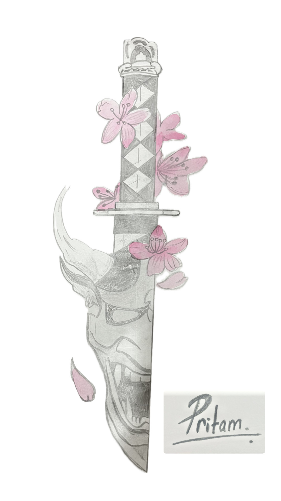

This is how we share the money earned or the profit for school fundraising, donations, and supporting young entrepreneurs.
Students’ talents should not be hidden. Therefore, this website was created to showcase students’ talents and help them earn profits through their creativity. We also organize fundraisers for our school and donate to temples and shelters. Students create bags from recycled plastic bottles, crochet keychains, and handmade flowers. All of these talents are meaningful, creative, and useful.

Drawings created by young talented students like this should not be hidden. Their creativity and talent deserve to be showcased and appreciated. Therefore, young voice matters.
This is how we share the money earned or the profit for school fundraising, donations, and supporting young entrepreneurs.
Our website is also used for buying trustworthy products made by talented and reliable students. Every product is handmade with creativity, care, and dedication. By purchasing these products, you are supporting young artists and student entrepreneurs while helping fund school activities and donations.